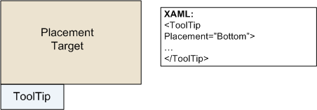
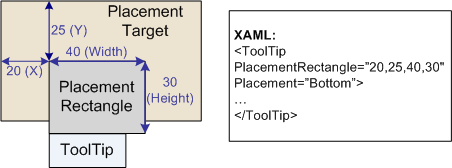
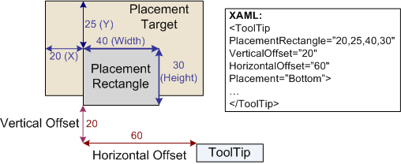

Практическое руководство. Определение положения всплывающей подсказки
В этом примере показано, как для указания положения всплывающей подсказки на экране.
Пример
Можно положения всплывающей подсказки с помощью набора пять свойств, которые определены в обоих ToolTip и ToolTipService классы. В следующей таблице показаны эти два набора пять свойств и ссылки на справочную документацию в соответствии с классом.
Соответствующие свойства всплывающей подсказки в соответствии с классом
Если определить содержимое всплывающей подсказки с помощью ToolTip объекта, можно использовать свойства любого класса, однако ToolTipService свойства имеют приоритет. Используйте ToolTipService свойства для подсказки, которые не определены как ToolTip объектов.
На следующих рисунках положения всплывающей подсказки с помощью этих свойств. Несмотря на то что, XAML примерах в этих примерах показано, как задать свойства, которые определяются ToolTip класса, соответствующего свойства ToolTipService класс следуют тем же правилам макета. Дополнительные сведения о возможных значениях свойства размещения см. в разделе поведение при размещении контекстного меню.
На следующем рисунке показано положение подсказки с помощью свойства размещения:

На следующем рисунке показано положение подсказки с помощью свойства размещения и PlacementRectangle:

На следующем рисунке показано положение подсказки с помощью свойств Placement, PlacementRectangle и смещение:

В следующем примере показано, как использовать ToolTip свойства для указания положения всплывающей подсказки, содержимое которых ToolTip объекта.
<Ellipse Height="25" Width="50"
Fill="Gray"
HorizontalAlignment="Left"
ToolTipService.InitialShowDelay="1000"
ToolTipService.ShowDuration="7000"
ToolTipService.BetweenShowDelay="2000">
<Ellipse.ToolTip>
<ToolTip Placement="Right"
PlacementRectangle="50,0,0,0"
HorizontalOffset="10"
VerticalOffset="20"
HasDropShadow="false"
Opened="whenToolTipOpens"
Closed="whenToolTipCloses"
>
<BulletDecorator>
<BulletDecorator.Bullet>
<Ellipse Height="10" Width="20" Fill="Blue"/>
</BulletDecorator.Bullet>
<TextBlock>Uses the ToolTip Class</TextBlock>
</BulletDecorator>
</ToolTip>
</Ellipse.ToolTip>
</Ellipse>
//Create an ellipse that will have a
//ToolTip control.
Ellipse ellipse1 = new Ellipse();
ellipse1.Height = 25;
ellipse1.Width = 50;
ellipse1.Fill = Brushes.Gray;
ellipse1.HorizontalAlignment = HorizontalAlignment.Left;
//Create a tooltip and set its position.
ToolTip tooltip = new ToolTip();
tooltip.Placement = PlacementMode.Right;
tooltip.PlacementRectangle = new Rect(50, 0, 0, 0);
tooltip.HorizontalOffset = 10;
tooltip.VerticalOffset = 20;
//Create BulletDecorator and set it
//as the tooltip content.
BulletDecorator bdec = new BulletDecorator();
Ellipse littleEllipse = new Ellipse();
littleEllipse.Height = 10;
littleEllipse.Width = 20;
littleEllipse.Fill = Brushes.Blue;
bdec.Bullet = littleEllipse;
TextBlock tipText = new TextBlock();
tipText.Text = "Uses the ToolTip class";
bdec.Child = tipText;
tooltip.Content = bdec;
//set tooltip on ellipse
ellipse1.ToolTip = tooltip;
В следующем примере показано, как использовать ToolTipService свойства для указания положения всплывающей подсказки, содержимое которых не ToolTip объекта.
<Ellipse Height="25" Width="50"
Fill="Gray"
HorizontalAlignment="Left"
ToolTipService.InitialShowDelay="1000"
ToolTipService.ShowDuration="7000"
ToolTipService.BetweenShowDelay="2000"
ToolTipService.Placement="Right"
ToolTipService.PlacementRectangle="50,0,0,0"
ToolTipService.HorizontalOffset="10"
ToolTipService.VerticalOffset="20"
ToolTipService.HasDropShadow="false"
ToolTipService.ShowOnDisabled="true"
ToolTipService.IsEnabled="true"
ToolTipOpening="whenToolTipOpens"
ToolTipClosing="whenToolTipCloses"
>
<Ellipse.ToolTip>
<BulletDecorator>
<BulletDecorator.Bullet>
<Ellipse Height="10" Width="20" Fill="Blue"/>
</BulletDecorator.Bullet>
<TextBlock>Uses the ToolTipService class</TextBlock>
</BulletDecorator>
</Ellipse.ToolTip>
</Ellipse>
//Create and Ellipse with the BulletDecorator as
//the tooltip
Ellipse ellipse2 = new Ellipse();
ellipse2.Name = "ellipse2";
this.RegisterName(ellipse2.Name, ellipse2);
ellipse2.Height = 25;
ellipse2.Width = 50;
ellipse2.Fill = Brushes.Gray;
ellipse2.HorizontalAlignment = HorizontalAlignment.Left;
//set tooltip timing
ToolTipService.SetInitialShowDelay(ellipse2, 1000);
ToolTipService.SetBetweenShowDelay(ellipse2, 2000);
ToolTipService.SetShowDuration(ellipse2, 7000);
//set tooltip placement
ToolTipService.SetPlacement(ellipse2, PlacementMode.Right);
ToolTipService.SetPlacementRectangle(ellipse2,
new Rect(50, 0, 0, 0));
ToolTipService.SetHorizontalOffset(ellipse2, 10.0);
ToolTipService.SetVerticalOffset(ellipse2, 20.0);
ToolTipService.SetHasDropShadow(ellipse2, false);
ToolTipService.SetIsEnabled(ellipse2, true);
ToolTipService.SetShowOnDisabled(ellipse2, true);
ellipse2.AddHandler(ToolTipService.ToolTipOpeningEvent,
new RoutedEventHandler(whenToolTipOpens));
ellipse2.AddHandler(ToolTipService.ToolTipClosingEvent,
new RoutedEventHandler(whenToolTipCloses));
//define tooltip content
BulletDecorator bdec2 = new BulletDecorator();
Ellipse littleEllipse2 = new Ellipse();
littleEllipse2.Height = 10;
littleEllipse2.Width = 20;
littleEllipse2.Fill = Brushes.Blue;
bdec2.Bullet = littleEllipse2;
TextBlock tipText2 = new TextBlock();
tipText2.Text = "Uses the ToolTipService class";
bdec2.Child = tipText2;
ToolTipService.SetToolTip(ellipse2, bdec2);
stackPanel_1_2.Children.Add(ellipse2);